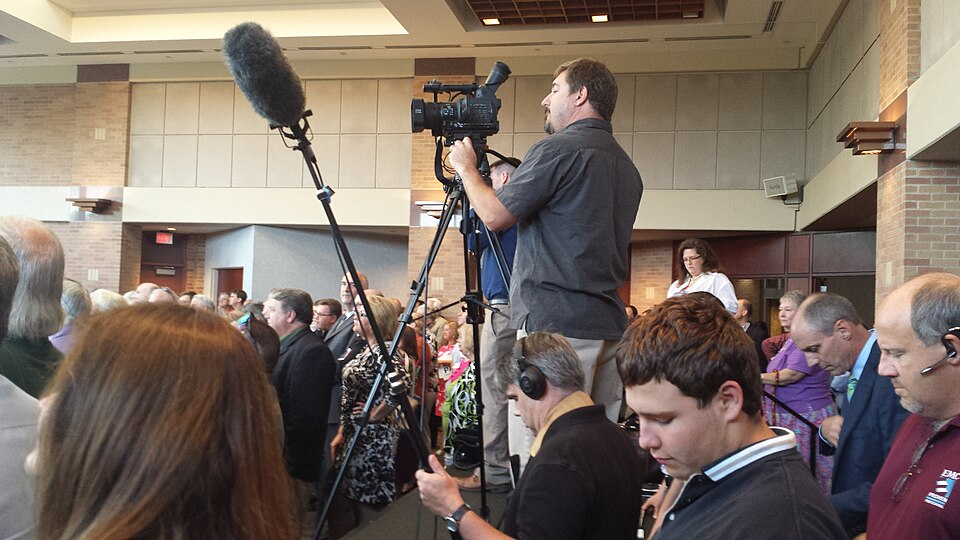
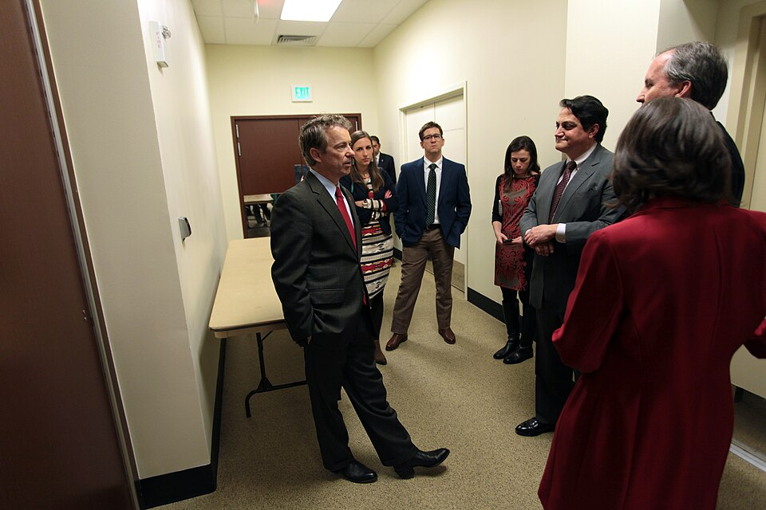
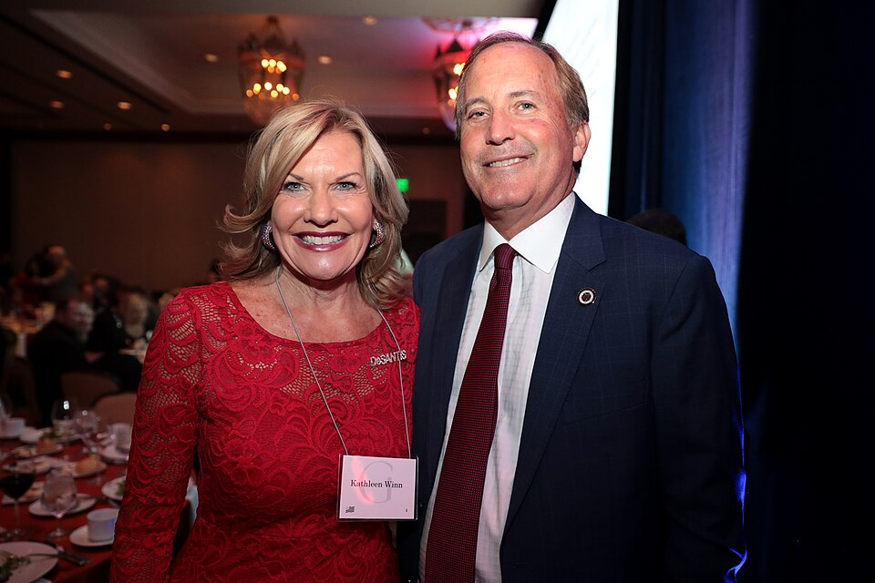
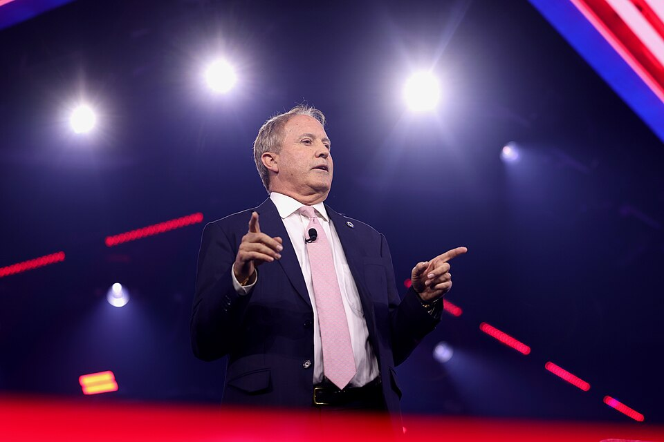
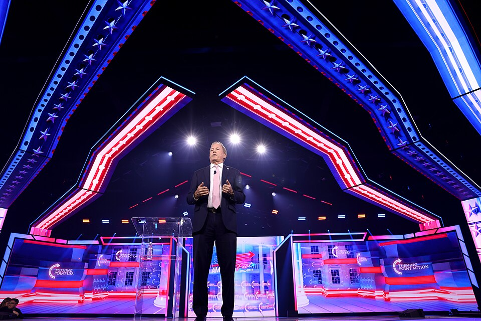
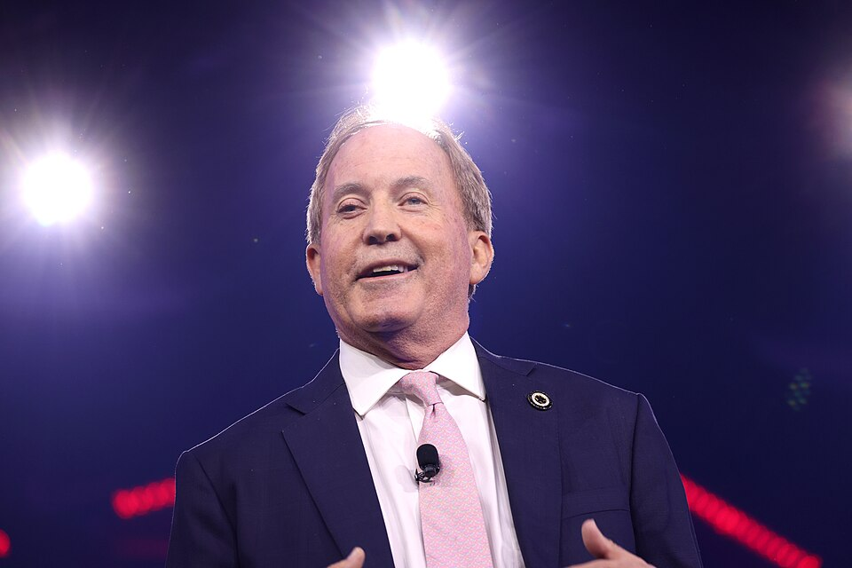
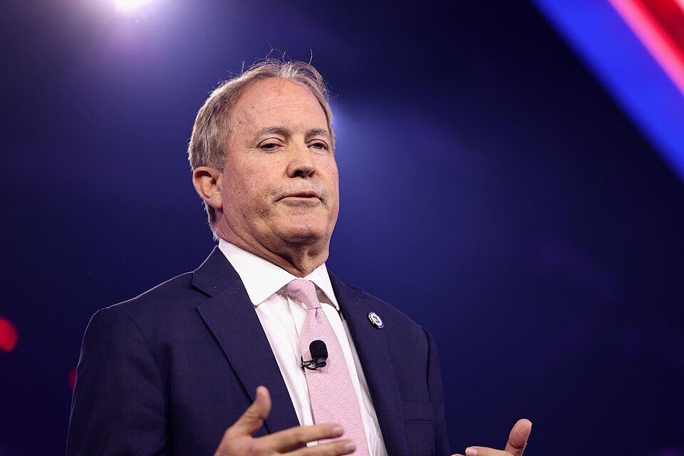

Visual identity and appearance research — Ken Paxton (R)视觉识别与外貌研究——Ken Paxton（共和党）
影像索引 / Image index
本页直接加载可本地展示的 69 张影像（该候选人共 98 条记录，其余 29 条只保留来源链接）。点击缩略图可打开原图。这些照片只用于核对「视觉形象」的可观察事实——面部几何、身体比例与着装仍未测量。
 2013-08-01 · Alice Linahan Voices Empow
2013-08-01 · Alice Linahan Voices Empow 2013-08-01 · Alice Linahan Voices Empow
2013-08-01 · Alice Linahan Voices Empow 2013-08-01 · Alice Linahan Voices Empow
2013-08-01 · Alice Linahan Voices Empow 2013-08-01 · Alice Linahan Voices Empow
2013-08-01 · Alice Linahan Voices Empow
2013-08-01 · Alice Linahan Voices Empow 2013-08-02 · Alice Linahan Voices Empow
2013-08-02 · Alice Linahan Voices Empow 2013-08-02 · Alice Linahan Voices Empow2013-08-02 · Alice Linahan Voices Empow
2013-08-02 · Alice Linahan Voices Empow2013-08-02 · Alice Linahan Voices Empow 2013-08-02 · Alice Linahan Voices Empow
2013-08-02 · Alice Linahan Voices Empow 2013-08-02 · Alice Linahan Voices Empow
2013-08-02 · Alice Linahan Voices Empow 2015-01-30 · Gage Skidmore from Peoria,
2015-01-30 · Gage Skidmore from Peoria, 2015-01-30 · Gage Skidmore from Peoria,
2015-01-30 · Gage Skidmore from Peoria,
2015-01-30 · Gage Skidmore from Peoria,2018-02-27 · The United States Departme2021-11-05 · Gage Skidmore from Surpris
2021-11-05 · Gage Skidmore from Surpris2021-11-05 · Gage Skidmore2021-11-05 · Anythingyouwant
2024-12-21 · Gage Skidmore from Surpris
2024-12-21 · Gage Skidmore from Surpris 2024-12-21 · Gage Skidmore from Surpris
2024-12-21 · Gage Skidmore from Surpris
2024-12-21 · Gage Skidmore from Surpris
2024-12-21 · Gage Skidmore from SurprisVisual identity and appearance research — Ken Paxton / 视觉识别与外貌研究——Ken Paxton
Companion dataset: image_archive.csv (98 Paxton rows).
配套数据集：image_archive.csv（98 条 Paxton 记录）。
Measured image statistics: _staging/_visual_metrics.csv.
已测量的图像统计量：_staging/_visual_metrics.csv。
1. Method, and the limits of this pass / 方法与本轮工作的限度
The same three-tier evidence separation used for the Talarico file applies:
此处沿用与 Talarico 文件相同的三层证据区分方式：
- Provenance evidence — read programmatically from the Wikimedia Commons API (
imageinfowithurl|size|mime|extmetadata): file page, original file URL, author, licence, original dimensions, capture date. These cells areverified. 来源溯源证据——通过程序从 Wikimedia Commons API 读取（imageinfo，参数url|size|mime|extmetadata）：文件页面、原始文件 URL、作者、许可协议、原始尺寸、拍摄日期。这些单元格标记为verified（已核实）。 - Documented description evidence — what captions, outlets and C-SPAN listings actually say about staging and branding, cited to the outlet. 有文献记载的描述性证据——图片说明、媒体与 C-SPAN 节目单实际就舞台布置与品牌所作的陈述，均注明出处媒体。
- Measured image statistics — Pillow/NumPy measurements of the local copies: dimensions, aspect ratio, orientation, Laplacian-variance sharpness, mean luma, contrast, saturation proxy. These describe photographs, not the man. 已测量的图像统计量——使用 Pillow/NumPy 对本地副本所作的测量：尺寸、宽高比、方向、拉普拉斯方差锐度、平均亮度、对比度、饱和度代理指标。这些描述的是照片，而不是本人。
Not performed, and why. No facial-landmark detection, facial-geometry ratio computation or body-proportion measurement was executed. The Python environment provides Pillow and NumPy only — cv2, mediapipe, dlib and face_recognition are all absent — and the analyst model in this session cannot take image input, so no photograph was visually judged by the research agent. Section 7 gives the repeatable protocol; no numbers are invented in its place.
未执行的工作及其原因。 本档案未执行任何人脸关键点检测、面部几何比例计算或身体比例测量。Python 环境仅提供 Pillow 与 NumPy——cv2、mediapipe、dlib 与 face_recognition 全部缺失——且本次会话中的分析模型无法接收图像输入，因此研究者代理未对任何照片作出视觉判断。第 7 节给出可重复的测量协议；本文件不会以虚构数字替代测量结果。
One archival correction worth recording. Enumeration initially captured a Commons file File:KPaxton.png whose description reads "Ken Paxton of Lawton, OK", dated 1986 — a different person. It was identified and removed from the dataset (PAX-IMG-0801 retired, do not reuse). Anyone extending this archive should screen by description, not filename alone.
一处值得记录的档案更正。 最初的枚举曾采集到一份 Commons 文件 File:KPaxton.png，其描述为「Ken Paxton of Lawton, OK」（译：俄克拉荷马州劳顿市的 Ken Paxton），日期为 1986 年——这是另一个人。该文件已被识别并从数据集中移除（PAX-IMG-0801 已停用，不得再次使用）。任何扩展本档案的人都应按描述而非仅凭文件名进行筛查。
2. Archive composition / 档案构成
| Property / 属性 | Value / 数值 |
|---|---|
| Rows 记录条数 | 98 |
| Licensed (CC) copies retained locally 本地保留的获许可（CC）副本 | 91 |
| Public-domain copies retained locally 本地保留的公有领域副本 | 1 |
| All-rights-reserved, link-and-credit-only records 保留全部权利、仅链接并注明出处的记录 | 6 |
| Rows joined to a 2026 campaign event 与 2026 年某场竞选活动关联的记录 | 5 |
| Date span 日期跨度 | 2013-08-01 → 2026-10-07 |
| Year distribution 年份分布 | 2013: 11, 2015: 3, 2018: 1, 2021: 4, 2022: 1, 2024: 35, 2025: 38, 2026: 5 |
| Principal photographers 主要摄影师 | Gage Skidmore (~71 files), Alice Linahan / Voices Empower (11), Xuthoria (7), plus government and agency credits Gage Skidmore（约 71 份文件）、Alice Linahan／Voices Empower（11 份）、Xuthoria（7 份），另有政府与通讯社署名 |
The skew is the headline finding about this archive. Of 98 rows, 68 are photographs taken at AmericaFest, the Turning Point USA conference in Phoenix (2024 and 2025 editions, mostly by Gage Skidmore under CC BY-SA 4.0), and a further 3 are from a Goldwater Institute dinner. Only 5 rows are joined to an actual 2026 Senate-campaign event, and only 5 rows fall in 2026 at all. This is overwhelmingly conference-platform photography, not campaign-trail photography: it shows a man at a microphone, on stage, under conference lighting, repeatedly. It is excellent for studying framing, staging and podium posture; it is not representative of his 2026 campaign appearances, and must not be presented as such.
这种偏斜是关于本档案最重要的发现。 在 98 条记录中，有 68 条拍摄于 AmericaFest，即 Turning Point USA 在凤凰城举办的会议（2024 年与 2025 年两届，多数由 Gage Skidmore 以 CC BY-SA 4.0 拍摄），另有 3 条来自 Goldwater Institute 的一场晚宴。仅 5 条记录与实际的 2026 年参议院竞选活动相关联，且整批中仅有 5 条落在 2026 年。这压倒性地是会议讲台式摄影，而非竞选巡回摄影：它反复呈现一个人站在麦克风前、站在台上、处于会议灯光之下的样子。它非常适合研究取景、舞台布置与讲台姿态；它不代表其 2026 年竞选活动中的出场情况，也不得被如此呈现。
3. Measured frame properties (69 locally held copies) / 已测量的画面属性（本地持有 69 份副本）
These describe the 800px local derivatives of the Commons originals.
以下描述的是 Commons 原件的 800px 本地派生文件。
| Metric / 指标 | Median / 中位数 | Min / 最小值 | Max / 最大值 |
|---|---|---|---|
| Aspect ratio (w/h) 宽高比（宽/高） | 1.500 | 0.519 | 1.778 |
| Laplacian variance (sharpness) 拉普拉斯方差（锐度） | 423.5 | 43.4 | 4315.2 |
| Mean luma (0–255) 平均亮度（0–255） | 88.8 | 38.9 | 162.6 |
| Luma std-dev (contrast) 亮度标准差（对比度） | 67.1 | 46.9 | 87.7 |
| Saturation proxy (0–1) 饱和度代理（0–1） | 0.2 | 0.1 | 0.5 |
Orientation: 55 landscape, 14 portrait. Original-file resolution class: 54 high (≥8 MP), 8 medium, 7 low; median original file 44.8 MP. Two facts follow directly and only: the corpus is dominated by modern, very high-resolution landscape frames, and the median frame is somewhat darker and more contrasty than the Talarico set (mean luma 88.8 vs 103.0; contrast 67.1 vs 54.9) — which is consistent with conference stage lighting and is not evidence about the subject's appearance.
方向：横幅 55 张，竖幅 14 张。原始文件分辨率等级：高（≥8 MP）54 张，中 8 张，低 7 张；原始文件中位数 44.8 MP。由此直接且仅能得出两项事实：这批图像以现代、极高分辨率的横幅画面为主；其中位画面比 Talarico 一组略暗且对比更强（平均亮度 88.8 对 103.0；对比度 67.1 对 54.9）——这与会议舞台灯光情况相符，而*不*是关于被摄者外貌的证据。
4. Documented visual identity — branding and iconography / 有据可查的视觉识别——品牌与图像符号
- The closing-tour brand was a Texas-Revolution relic. The October circuit was the "Come and Take It" bus tour, announced 2026-10-14 as 18 days and 30+ stops. Dock Line's illustration note explicitly identifies a replica of the 1835 Gonzales "Come and Take It" flag as the tour's visual signature (Dock Line;
PAX-SPC-1102§10). The slogan was delivered as a reversal aphorism: "In Texas, 'come and take it' has never been a slogan. It's a promise." 收尾阶段的巡回品牌是一件德州革命遗物。 10 月的巡回活动是 "Come and Take It"（译：来拿啊）巴士巡回，于 2026-10-14 宣布，为期 18 天、超过 30 个停留点。Dock Line 的插图说明明确指出，一面 1835 年 Gonzales「Come and Take It」旗帜的复制品是该巡回活动的视觉标志（Dock Line；PAX-SPC-1102第 10 节）。该口号以一种反转式的警句形式呈现："In Texas, 'come and take it' has never been a slogan. It's a promise."（译：在德州，「来拿啊」从来不是一句口号。它是一项承诺。） - Launch staging was bus-and-tarmac. The tour opened 2026-10-17 at Rockwall Municipal Airport — an airport-tarmac rally to about 200 people with a bus backdrop, at which he asked the crowd for prayers (
paxton_timeline.md§4; Dock Line; NYT headline-level). The bus is documented as a prop; its livery isunknown. 启动阶段的舞台布置是巴士加停机坪。 巡回活动于 2026-10-17 在 Rockwall Municipal Airport 开幕——一场约 200 人参加的机场停机坪集会，以一辆巴士为背景，他在会上请人群为其祈祷（paxton_timeline.md第 4 节；Dock Line；纽约时报仅标题层面）。该巴士已记录为一件道具；其车身涂装为unknown（未查明）。 - The planned symbolic climax was removed. The tour was advertised to end with a rally at the Alamo on 2026-11-02; it was cancelled on 2026-10-31 and replaced by Conroe (11:00) and Allen (17:30). The Alamo Trust said it was unaware of the plans and that site rules bar political events (Texas Tribune via News From The States, 2026-10-31). For visual-identity purposes this is consequential: the campaign abandoned the strongest historic backdrop it had built the tour around, two days out. 原定的象征性高潮被取消。 该巡回活动在宣传中预定以 2026-11-02 在 Alamo 的集会收尾；该集会于 2026-10-31 被取消，改由 Conroe（11:00）与 Allen（17:30）替代。Alamo Trust 表示其事先并不知情，且场地规则禁止政治活动（Texas Tribune 经 News From The States，2026-10-31）。就视觉识别而言，这一点具有实质影响：竞选团队在投票前两日，放弃了整个巡回活动所围绕搭建的最具历史感的背景。
- The heaviest visual messaging was produced by outside groups, not the campaign. Per
advertisements.csv, the candidate campaign has one documented statewide flight (a $20m buy the week of 2026-09-28) withunknowncreative, while 12 documented ads came from outside PACs — including Texas PAC / Senate Leadership Fund spots ("for they/them, not you"; a "Transgenderification Beam" ad; a Spanish-language "por los nobinarios, no por ti"), an Angela Paxton "Republican ticket" spot, and a national NFL-Sunday placement. AdImpact reporting puts outside groups at 92% of Paxton's ad support vs 23% of Talarico's (media_narrative_timeline.md;06_campaign_finance/campaign_finance.csv). The visual attack vocabulary of the race was therefore largely not authored by the candidate's own campaign — a distinction the human researcher will want to keep intact. 最密集的视觉信息由外部团体而非竞选团队制作。 据advertisements.csv，候选人竞选团队仅有一次有据可查的全州投放（2026-09-28 当周的一笔 $20m 购买），且创意内容为unknown；而 12 支有据可查的广告来自外部政治行动委员会——包括 Texas PAC／Senate Leadership Fund 的广告（"for they/them, not you"（译：为「他们」，不是为你）；一支 "Transgenderification Beam"（译：跨性别化光束）广告；以及西班牙语的 "por los nobinarios, no por ti"（译：为了「非二元性别者」，不是为你））、一支 Angela Paxton 的 "Republican ticket"（译：共和党候选人名单）广告，以及一次全国性的 NFL 周日投放。AdImpact 的报道把外部团体计为 Paxton 广告支持额的 92%，而 Talarico 为 23%（media_narrative_timeline.md；06_campaign_finance/campaign_finance.csv）。因此，本场竞选的视觉攻击语汇在很大程度上并非由候选人自己的竞选团队创作——这一区分是人工研究者会希望完整保留的。
5. Documented staging and venues / 有据可查的舞台布置与场地
| Event / 活动 | Setting as documented / 有文献记载的场景 | Evidence / 证据 |
|---|---|---|
| Brownsville/McAllen border rallies, 2026-10 Brownsville／McAllen 边境集会，2026-10 | Stage entrance to "Y.M.C.A."; prayer opening; bus livery and signage unknown以 "Y.M.C.A." 一曲登台；以祈祷开场；巴士涂装与标语为 unknown | PAX-SPC-1104 |
| Rockwall launch, 2026-10-17 Rockwall 启动仪式，2026-10-17 | Airport tarmac, ~200 people, bus backdrop 机场停机坪，约 200 人，以巴士为背景 | PAX-SPC-1103 |
| Laredo GOTV, 2026-10-23 Laredo 催票活动，2026-10-23 | Restaurant; campaign-supplied photo (courtesy Jose De La Rosa / Paxton campaign) 餐厅；由竞选团队提供的照片（Jose De La Rosa／Paxton 竞选团队惠允） | PAX-SPC-1105 |
| Houston final pitch Houston 最后陈述 | Restaurant in Rice Military; down-ballot warm-up speakers on stage Rice Military 一带的餐厅；由同票层级选官员作暖场发言 | PAX-SPC-1106 |
| Tyler, 2026-11-01 Tyler，2026-11-01 | Restaurant/icehouse; protesters outside (photographs by Michael Richardson/KLTV) 餐厅／冰屋式酒吧；场外有抗议者（摄影：Michael Richardson／KLTV） | PAX-SPC-1107 |
| Allen, 2026-11-02 Allen，2026-11-02 | Tex-Mex restaurant — the site of Trump's May endorsement Tex-Mex 餐厅——Trump 5 月背书的地点 | PAX-SPC-1108 |
| Runoff victory, Plano, 2026-05-26 决选胜选，Plano，2026-05-26 | Victory party; exit music "Thunderstruck" 胜选派对；散场音乐为 "Thunderstruck"（译：雷霆万钧） | PAX-SPC-1109 |
| Concession, Dallas, , 2026-11-03 认输演说，Dallas，2026-11-03 | Election-night watch party; supporters in a prayer circle 选举之夜观选派对；支持者围成祈祷圈 | PAX-SPC-1111 |
The documented pattern is restaurant/icehouse and airport settings with a bus, versus the opponent's music venues and performing-arts centre. That difference is a documented fact about venue type; no inference about intended audience is drawn here.
有文献记载的模式是：以巴士为伴的餐厅／冰屋式酒吧与机场场地，对照对手方的音乐场馆与表演艺术中心。这一差异是关于场地类型的有据事实；本文件不就此对目标受众作任何推断。
6. Clothing and grooming — the documentary gap / 着装与仪容——文献缺口
No retrieved source describes Paxton's clothing at any 2026 event. The archive's clothing_notes is unknown for all 98 rows; every Paxton key-speech analysis records clothing as ⚠ unknown; and campaign_events.csv carries a clothing description for zero Paxton rows. No claim about suit colour, tie, sleeves, boots, hat or grooming is supportable from these materials.
没有任何已取得的来源描述 Paxton 在任何 2026 年活动上的着装。 本档案的 clothing_notes 在全部 98 条记录中均为 unknown；每一份 Paxton 关键演讲分析都将着装记为 ⚠ unknown；而 campaign_events.csv 对 0 条 Paxton 记录载有着装描述。本批材料不支持任何关于西装颜色、领带、袖子、靴子、帽子或仪容的主张。
The 91 locally retained licensed copies are the right raw material to close this gap: they were taken across 2013–2026 and include enough repeat views of the same speaker to establish a baseline wardrobe by direct observation. That observation was not possible in this session (no image input). Section 7's protocol, applied to the local copies, would produce a defensible clothing table.
本地保留的 91 份获许可副本正是弥补这一缺口的合适原料：它们拍摄于 2013 至 2026 年之间，包含足够多的同一演讲者重复影像，可以通过直接观察建立基线衣橱记录。但本次会话无法进行这种观察（无图像输入）。若将第 7 节的协议应用于本地副本，便可产出经得起质疑的着装入表。
7. Facial geometry and body proportion — protocol (not performed) / 面部几何与身体比例——测量协议（未执行）
No measurement was made. Because the corpus contains 68 frames of the same speaker from the same conference across two years, it is unusually well suited to a controlled comparison — but only if lens and framing are held constant within each comparison.
未进行任何测量。由于这批图像包含同一演讲者在同一会议、跨两年度的 68 帧画面，它在受控比较方面条件格外理想——但前提是每一次比较内部都保持镜头与取景恒定。
Landmarks and ratios are defined identically to the Talarico protocol (see visual_analysis_talarico.md §7): fWHR (bizygomatic width ÷ nasion→gnathion), facial index, intercanthal ratio, facial thirds, head height as a fraction of frame, shoulder-to-head ratio.
关键点与比值的定义与 Talarico 协议完全相同（见 visual_analysis_talarico.md 第 7 节）：面部宽高比（fWHR，颧宽 ÷ 鼻根点至颏下点）、面部指数（facial index）、内眦间距比（intercanthal ratio）、面部三等分、头高占画面比例、肩宽与头高比。
Corpus-specific cautions that must accompany any measurement.
任何测量都必须一并记录的、针对本批图像的特有警示。
- The AmericaFest frames were shot by different photographers with different lenses and distances; a 2024 portrait-lens frame and a 2025 wide-angle frame are not comparable, and averaging them would manufacture a ratio that no single photograph supports. AmericaFest 的画面由不同摄影师以不同镜头与距离拍摄；一张 2024 年人像镜头画面与一张 2025 年广角画面不可比较，对二者取平均将凭空制造出一个没有任何单张照片支持的比值。
- Many files are cropped derivatives ("- 55022425595 (cropped)", "cropped"), which changes head-height-to-frame fractions but not within-face ratios. 许多文件是裁切后的派生文件（"- 55022425595 (cropped)"、"cropped"），这会改变头高占画面的比例，但不改变面部内部的比值。
- Stage lighting is directional and often from below or the side, which alters apparent jaw width and nose projection. Ratios measured from such frames should be reported as lighting-affected. 舞台灯光具有方向性，且常自下方或侧面打来，这会改变下颌宽度与鼻部突度的观感。从此类画面测得的比值应报告为受灯光影响。
- No ratio in this list is a validated predictor of character, health or political behaviour. Report provenance with every number. 本清单中没有任何一项比值被验证为品格、健康或政治行为的预测指标。每一个数字都须附来源信息。
8. Asymmetry, skew and how to use this archive honestly / 不对称、偏斜，以及如何诚实使用本档案
Paxton holds 98 archived images against Talarico's 18 — the opposite of a neutral comparison, and for a documented reason: conservative conference circuits publish freely licensed photography, while Talarico's photographic record is mostly agency-copyrighted news coverage. Two separate warnings follow:
Paxton 在本档案中存有 98 张图像，而 Talarico 为 18 张——这与中立比较恰好相反，其原因有文献可查：保守派会议巡回活动会发布自由许可的摄影作品，而 Talarico 的摄影记录多为通讯社享有版权的新闻报道。由此引出两项各自独立的警示：
- Volume asymmetry. A larger pool is not better evidence of a campaign's visual effort; it reflects what photographers licensed freely. 数量不对称。 更大的图库并不构成关于某场竞选视觉投入的更好证据；它反映的是摄影师自由许可发布的数量。
- Context skew, which is worse. Two-thirds of Paxton's pool comes from a single recurring conference, so it depicts him as a conference speaker, not as a 2026 Senate candidate touring Texas. Comparing these frames to Talarico's rally and victory-night photographs would confound venue with candidate. 情境偏斜，而这一点更为严重。 Paxton 图库的三分之二来自同一个反复举办的会议，因此它呈现的是他作为会议演讲者的形象，而不是作为正在德州巡回的 2026 年参议员候选人。把这些画面与 Talarico 的集会及胜选之夜照片相比较，会把*场地*与*候选人*混为一谈。
Both warnings are recorded in research_gaps.md. The honest conclusion about this archive is that it documents provenance, staging and branding well, and documents appearance, clothing and facial geometry not at all.
两项警示均记录于 research_gaps.md。关于本档案最诚实的结论是：它较好地记录了来源溯源、舞台布置与品牌，而对外貌、着装与面部几何则完全没有记录。
Sources / 来源
Citation strings are reproduced as published (English titles, byte-for-byte URLs) so that every reference stays verifiable; the Chinese gloss renders the description only.
引证字符串按原发表形式复制（英文标题、逐字 URL），以使每条参考都可核验；中文说明仅对描述内容作翻译。
- Wikimedia Commons API and file pages, enumerated 2026-11-10:
Category:Ken Paxtonand its subcategories; per-fileimageinfometadata. Includes the AmericaFest 2024/2025 series by Gage Skidmore (CC BY-SA 4.0) and Alice Linahan / Voices Empower files (CC BY-SA 2.0). Wikimedia Commons API 与文件页面，枚举日期 2026-11-10：Category:Ken Paxton及其子分类；逐文件imageinfo元数据。包含 Gage Skidmore 的 AmericaFest 2024／2025 系列（CC BY-SA 4.0）与 Alice Linahan／Voices Empower 的文件（CC BY-SA 2.0）。 - Dock Line, "Paxton and Talarico hit the road on dueling bus tours as early voting begins" — https://docklinemagazine.com/politics-government/paxton-and-talarico-hit-the-road-on-… Dock Line（译：提前投票开始之际，Paxton 与 Talarico 各自展开对垒式巴士巡回）
- Texas Tribune via News From The States, "Ken Paxton appears to cancel final rally of his 'Come and Take It' tour at the Alamo", 2026-10-31 — https://www.newsfromthestates.com/article/ken-paxton-appears-cancel-final-rally-his-c… Texas Tribune 经 News From The States，2026-10-31（译：Ken Paxton 似已取消其「来拿啊」巡回在 Alamo 的最后一场集会）
02_campaign_events/paxton_timeline.md§4 (tour record) andcampaign_events.csv(visual_notescolumn).02_campaign_events/paxton_timeline.md第 4 节（巡回活动记录）与campaign_events.csv（visual_notes列）。05_campaign_media/advertisements.csvand06_campaign_finance/campaign_finance.csv(ad sponsorship, outside-group share).05_campaign_media/advertisements.csv与06_campaign_finance/campaign_finance.csv（广告出资方、外部团体占比）。- Key-speech analyses in
03_speeches/key_speech_analysis/(staging sections).03_speeches/key_speech_analysis/中的关键演讲分析（舞台布置各节）。 - Measured statistics:
_staging/_visual_metrics.csv. 已测量的统计量：_staging/_visual_metrics.csv。